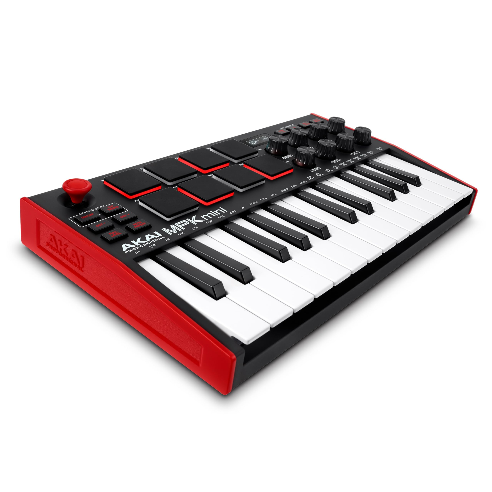
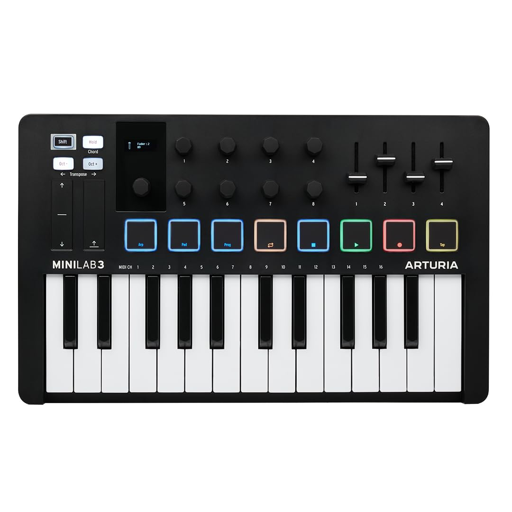
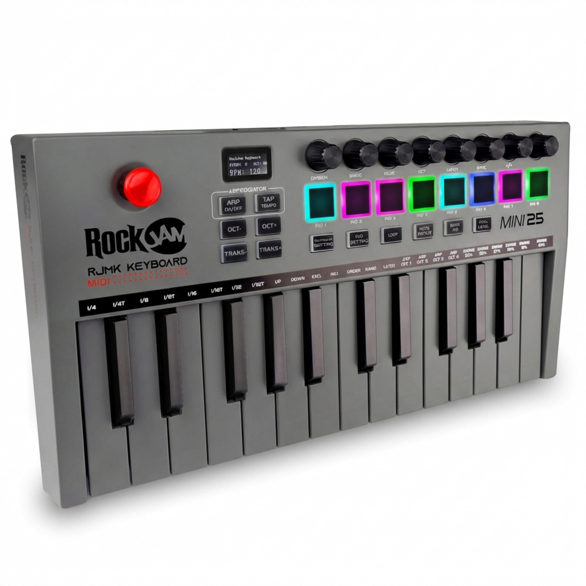

Melhores teclados MIDI para iniciantes (2026)
7 de maio de 2026

No mundo da produção musical, o teclado MIDI é a extensão da criatividade de um produtor. Para quem está começando, não se pensa duas vezes em ter o melhor equipamento que caiba no orçamento.
1. Akai MPK Mini MK3

O teclado mais popular do mundo por um motivo: ele entrega tudo que um iniciante precisa em um formato compacto.
✓ Prós: Pads de alta qualidade e portabilidade extrema.
✗ Contras: Teclas pequenas para quem já toca piano.
Ver Preço na Amazon

2. Arturia MiniLab 3
Para quem busca uma construção mais robusta e um pacote de softwares de instrumentos clássicos de alto nível.
✓ Prós: Design premium e ótimos controles de fader.
✗ Contras: Um pouco mais pesado que os concorrentes.
Ver Preço na Amazon

3. RockJam Go MIDI Controller
O RockJam Go é um controlador MIDI compacto com suporte USB e Bluetooth, ideal para iniciantes que querem mobilidade e praticidade para produzir música em qualquer lugar.
✓ Prós: Conexão Bluetooth + USB, portátil e fácil de usar.
✗ Contras: Construção mais simples e menos profissional.
Ver Preço na Amazon